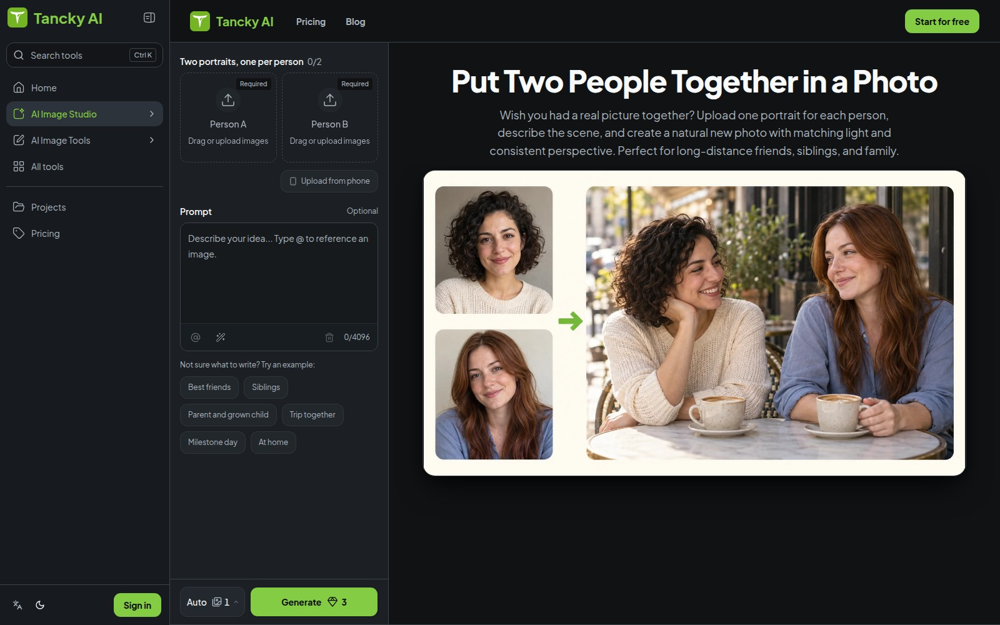

先分清两个人，再描述场景
两位异地朋友想做一张生日卡，手头往往只有光线和背景不同的独照。Tancky的新入口要求Person A和Person B各上传一张照片，关系和地点可以用预设起步，也可以自己描述。输入槽把人物身份分开，@引用则帮助把衣着等要求指向其中一人。系统随后重画共同场景，而不是简单把两块人物剪贴在旧背景上。这里省掉的是抠图、调光和拼布局的手工步骤，但不是替用户确认人物是否真的像本人；下载前仍需拿原照逐个比较。
Tancky · 软件更新 · 官方日志

两位异地朋友想做一张生日卡，手头往往只有光线和背景不同的独照。Tancky的新入口要求Person A和Person B各上传一张照片，关系和地点可以用预设起步，也可以自己描述。输入槽把人物身份分开，@引用则帮助把衣着等要求指向其中一人。系统随后重画共同场景，而不是简单把两块人物剪贴在旧背景上。这里省掉的是抠图、调光和拼布局的手工步骤，但不是替用户确认人物是否真的像本人；下载前仍需拿原照逐个比较。
11月2日的日志除了新增工具，还记录了示例按钮的说明，以及Google登录改为小窗口后保留照片与提示。对先试填再注册的人，这能避免刚整理好的素材因跳转而丢失。两张照片都必须提供，每张结果消耗三积分。页面当天还显示十一月三日上色工具，本次没有确认它在截止前已发布，因此不把后续变化合并为本次增量。当前信息只支持厂商公布的操作流程，没有完成一次实际上传、登录和生成的独立检验。
产品说明承认，牙齿、眼镜和痣等小细节可能变化，模糊或很小的人脸更难保持相似。两个人手臂相接的位置、身体比例和身高差，也值得单独放大检查。可以在提示中说明相对高度，但重新生成不保证只修正这一项。更合适的用途是双方知情的创意卡片，而不是把图片当作曾经见面的记录。若只是想保留真实面孔并放在同一张卡里，普通拼图仍是直接的替代办法，也不会引入一整套新姿势和环境细节。
定价页提供一次性积分包和订阅，所读页面列六十积分包$4.99，但未在相关位置明确币种，不换算成本地报价。生成成本应按最终满意的一张计算，而不是只看第一次按钮的三积分。隐私政策说明上传图片用于云端计算，源图按其承诺在二十四小时内清除，成品保存到账号历史；这些是厂商声明而非独立审计。准备家庭照片时，先决定哪些人物愿意被这样使用，再选少量获准照片测试，避免为了比较效果一次上传整本相册。